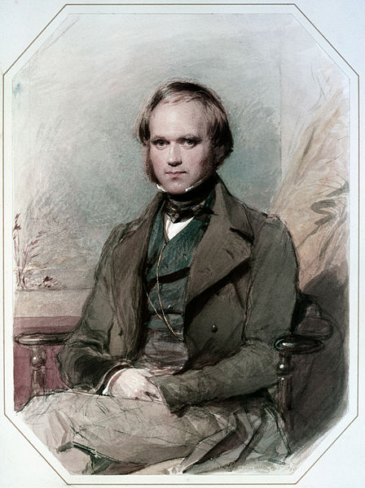
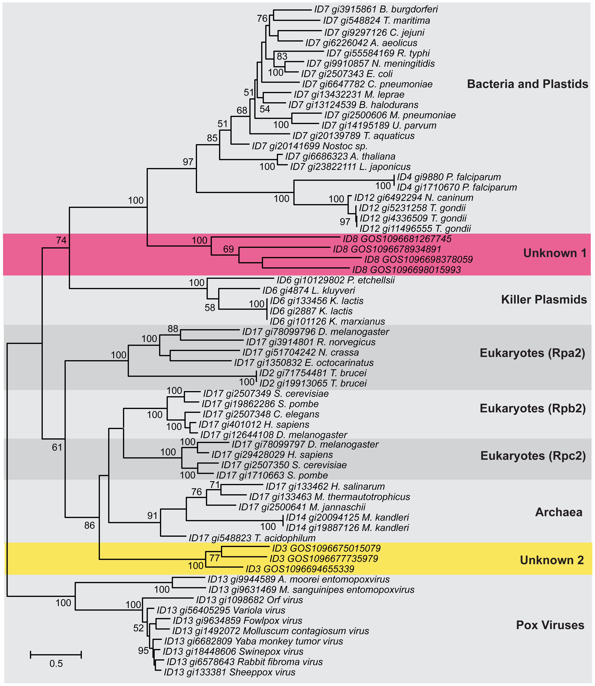
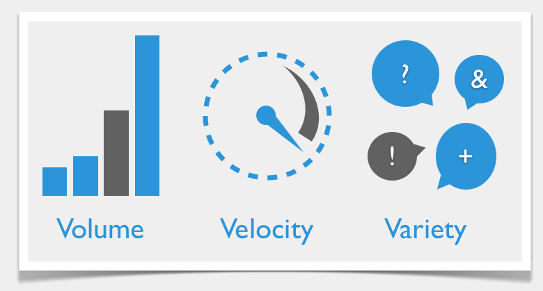
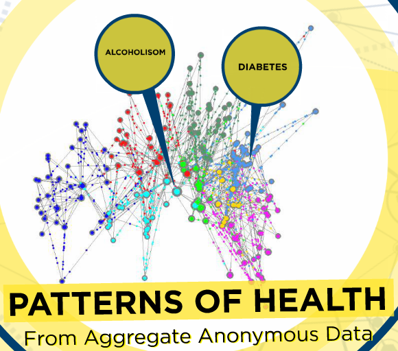
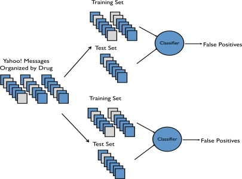
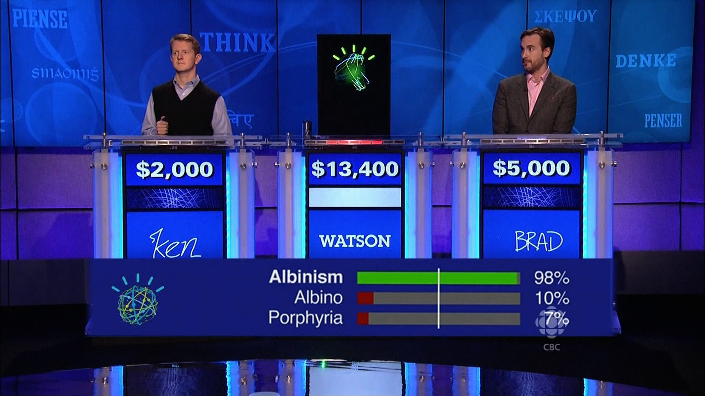
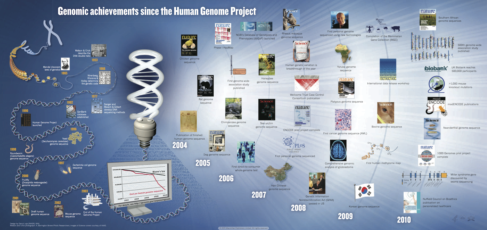

The Voyage of the HMS Beagle (1831)



Global Ocean Sampling Expedition (2003)


A new kind of science
Classic science
- Empirical research
- Theory and Hypothesis (e.g. Newtons Law of Gravity)
- "All models are wrong, but some are useful" (George Box)
Data-driven science
- Statistical analysis instead of theory
- "Unreasonable effectivness of data" (Peter Norvig)
- "There is No Data like More Data" (Robert Mercer)

Outline
- Big Data in biomedicine
- Translational bioinformatics and phylogenetic inference in cancer research
- Psychosocial and ethical issues in data-driven medicine
What makes Big Data big?
Characteristics of Big Data
- Volume
- Velocity
- Variety
Exponential progress
- Ubiquitous Sensing
- Faster
- Cheaper

Ubiquitous Sensing: Finding patterns

Predicting Adverse Drug Events from Personal Health Messages
B.W.Chee et al in AMIA Annu Symp Proc. 2011; 2011: 217–226.


Detecting influenza epidemics using search engine query data
J.Gingsberg et al in Nature 457 1012-1014
Artificial Intelligence: IBM Watson

Faster: Biomedical Imaging

Cheaper: Genomics Revolution
Exponential growth of available genomic data
Translational bioinformatics
Phylogenetic inference
RAxML - a tool for phylogenetic inference


Psychosocial and ethical issues
Commercial companies
Commercial companies
Commercial companies
<Thank You!>
david.dao@h-its.org